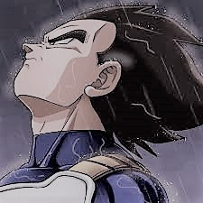
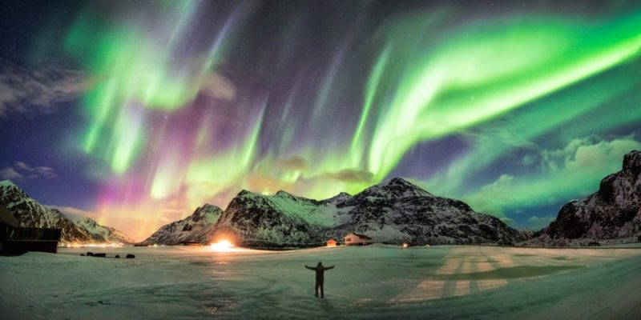

De no ser por esas veces en que cometo la gran barbaridad de ponerme a pensar,
O por esas otras veces en que cometo la gran estupidez de no olvidar.
De meditar mirando al techo al despertar de imaginar cualquier cosa.
De no ser por esas veces en que suelo respirar podría jurar que no te recuerdo nada.

Y lo peor es que yo te conozco tanto, que podría recordarte quién eres por si lo olvidas.
Y lo peor del caso es que de ti sé tanto, que podría dictar clases intensivas de tu vida.
Por eso casi sé cuando me estás pensando, por eso creo saber cuando de mí te olvidas.
Y sé que como yo quisieras poder sólo parpadeando, echar el tiempo atrás en nuestras vidas.
El único detalle es que la ciencia no ha podido crear esas maquinitas del tiempo.
Por eso creo que nos resulte un poquitico bien jodido, volver a los días en que tu cuerpo
Estaba convertido en río sobre el mío, dejando escapar seguido esos orgasmitos lentos.
Que cabe acotar nacían al mismo tiempo, hasta que un cigarrillo daba fecha de fallecimiento

Escribo sólo versos tristes, en algún patético me convertiste, releo lo que escribiste
Cuando éramos felices (o más o menos felices) y sentía como mariposas lo que hoy sé que son lombrices.
Estoy en esos tiempos en que gota a gota, la mente se agota, pasan los días y apenas lo notas
La rutina es implacable, el mal humor te arropa y luces como un don nadie con cualquier ropa
(¡pero te juro que estoy harto!) Hoy voy comenzar a escapar de mi cuarto, ya estoy harto...

Hoy solo quiero pensar en cosas que me hagan reír, ¡sí!, ¡que me hagan ser feliz!
Dejar de mirar gris y en nubes de paz revolcarse,
arrancar de raíz todo recuerdo infeliz
Y ahora si te preguntan di que estoy pensando en mí.
Y aunque sobren rimas de nostalgia que deba cantar,
aunque el clima se me ponga gris, arriba mi frente va a estar.
Aunque el tiempo se niegue a esperarme,
yo nadaré contra corriente aún sabiendo que...
El porqué de por qué llegamos a este punto es muy difícil de decir.
Cómo determinar causas de que ya no estemos aunque nos queramos así
Pudo haber sido por mí, pudo haber sido por ti, pudo haber sido cualquier cosa,
pudo haber sido incluso el aleteo de una mariposa...
El hecho es que nos perdimos para siempre (ba-ba-ba-ba-bye)
El hecho es que nos perdimos para siempre (ba-ba-ba-ba-bye)
El hecho es que nos perdimos para siempre (eh, ba-ba-ba-ba-bye)
El hecho es que nos perdimos para siempre...
El hecho es que nuestro amor llegó a su muerte.

Es maquiavélico meditar a solas donde tú viviste todo con ella.
Como una voz que te dice que a las estrellas un dedo no puede ocultar, no.
Es maquiavélico meditar a solas donde tú viviste todo con ella.
Como una voz que te dice que a las estrellas un dedo no puede ocultar, no.
Es maquiavélico meditar a solas donde tú viviste todo con ella.
Como una voz que te dice que a las estrellas un dedo no puede ocultar, no.
Es maquiavélico meditar a solas donde tú viviste todo con ella.
Como una voz que te dice que a las estr...